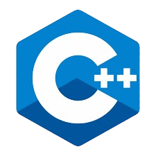

Linguagem de programação
As linguagens de programação mais utilizadas no ambiente robótico são o: C++ e o Python. Veja o porquê:
Python
O python é muito utilizado pois, ele é bem importante para a testar os robôs, já que ela pode ensinar, automatizar e pós-processar programas de robôs. Eles são bem fáceis e simples de usar, além de utilizar uma menor quantidade de linhas de códigos.

C++
C++ tem um desempenho em tempo real, como a robótica depende muito de um desempenho em tempo real, a C++ pode ser uma ótima linguagem de programação para se utilizar. O C++ te permite um contato direto sobre como o programa conversa com a máquina, sendo vantajoso pro programador, pois te dá um controle total sobre o robô que você está programando

Fonte: C++
Fonte: C++